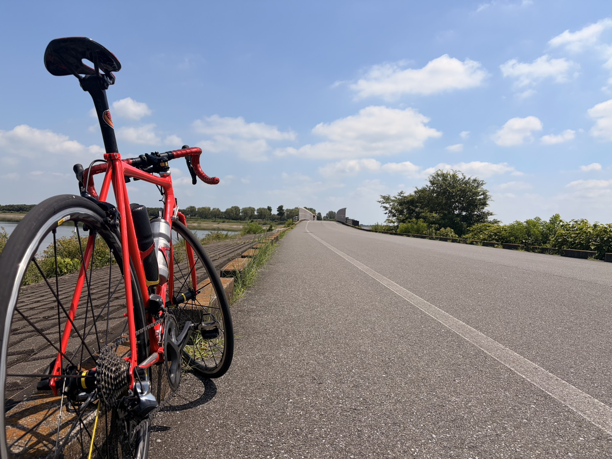

渡良瀬遊水地でアクティブレスト。膝に違和感が出たので少し慎重にする
外ゴルビー5本、ローラーSST20分×2相当、太平で坂ON＋テンポ。ここ3日間は、さすがにしっかり積んだ。その翌日は、渡良瀬遊水地で軽く脚を回す日にした。
狙いはアクティブレスト。完全に止まるのではなく、軽いギアで気持ちよく動く。それと、生活中に膝の前側へ軽い違和感が出たので、高出力は3日ほど控えて様子を見ることにした。

渡良瀬でアクティブレスト
ローラーなら、狙ったパワーに集中できる。SSTや一定走には本当に便利だ。ただ、回復目的の日まで画面の数字を追っていると、うっかり真面目になりすぎる。
今日は渡良瀬遊水地の周回コースへ。平坦で登りがほとんどなく、一定の軽さで走り続けやすい。太平や唐沢のように、気づくと坂でONになっている危険も少ない。
37.88kmを1時間19分。平均148W、NP170W、平均心拍118bpmで、75kg換算なら平均約1.97W/kg、NP約2.27W/kgだった。平均ケイデンスは90rpm。軽いギアで回して、強度を上げずに終えられた。

低強度でも暑さは別枠
ライドの強度は狙い通り低かったが、平均気温は34℃。この日は練習負荷より、暑さによる消耗を気にした方がよさそうだった。
推定発汗量は約1.15L。脚に大きなダメージを残す内容ではなくても、帰宅後にだるさを残すには十分な暑さである。アクティブレストだから何をしても回復、という話ではないらしい。
膝の前側に軽い違和感
今日の気になる点は、生活中に膝の前側へたまに出る軽い痛みというか違和感だった。自転車に乗っている最中には出ておらず、走った後に強くなった感じもない。強い痛みでもなく、頻度も低い。
原因は決めつけない。ここ数日の練習量や太もも周りの張りが関係しているかもしれないが、断定するほどの材料はない。だからこそ、無視して踏み続けるより一度様子を見る。
当面3日ほどは、重いギア、高トルク、強いダンシング、下半身筋トレ、HIIT、全力走を控えめにする。軽く乗ること自体は続けるが、痛みが出た日、場所、動作、翌日の状態だけは記録しておく。
完全に止めるか、何も考えず踏むか
以前なら、少しの違和感でも気にしすぎるか、逆に気にしないふりをするかの二択になっていた気がする。今回はその間を取る。
軽く回して、痛みの変化を見る。悪化するならそこでメニューを落とす。何も起きなければ、少しずつ通常の練習へ戻す。富士ヒルに向けて踏むことは必要だが、長く続けることも同じくらい必要だ。
明日は友人と話しながら軽く登る予定。ただしAethos2で軽いギアを使い、会話ペース中心にする。タイムは狙わず、ダンシングで強く踏み込まない。
今回やってみて思ったこと
渡良瀬遊水地の周回コースは、外でアクティブレストをする場所としてかなり使いやすかった。ローラーは狙った数字を出すのに強く、外は気持ちよく動いて回復するのに強い。この使い分けは、今後も続けてみたい。
膝の違和感は軽くても、今回は見逃さない。ちょうど3日間でしっかり踏んだ直後でもある。勢いに乗ることと、勢いのまま壊れることは別物なので、ここは少しだけ慎重にいく。
自分用メモ
- コース渡良瀬遊水地の周回コース。平坦基調でアクティブレスト向き
- 全体37.88km / 1時間19分 / 獲得標高58m / 平均148W / NP170W / IF0.619 / TSS50.2
- 強度75kg基準で平均1.97W/kg、NP2.27W/kg。平均心拍118bpm、平均ケイデンス90rpm
- 暑さ平均気温34℃、推定発汗量約1.15L。低強度でも暑さの消耗は別枠
- 膝生活中に前側へ軽い違和感。走行中・走行後の悪化はなし。3日ほど高出力を控えて記録する
- 次回唐沢5本は会話ペース。軽いギア、高ケイデンス寄り、ダンシングなし